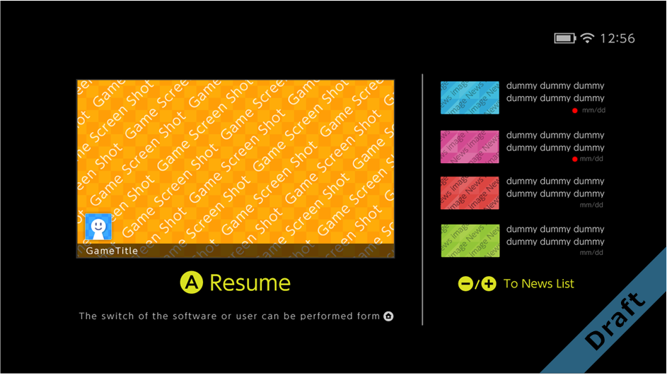
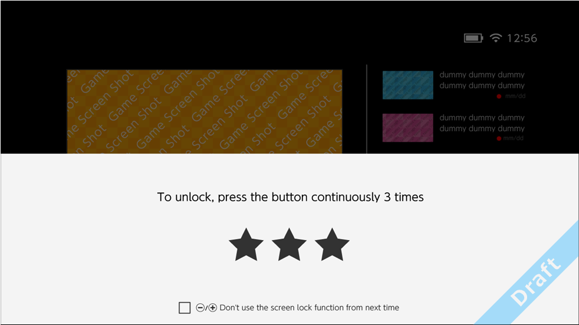

This screen is the welcome screen that is shown after turning on the system power or returning from sleep.

Press the A Button to resume the application that was being played when the system was put to sleep.
Also shown to the right are four picked-up news items. Select a news items to display a screen with that news in detail. For more information, see 5.2.2 News.
After the preceding screen, an Unlock screen appears to prevent erroneous operations.
If the system is placed into a bag, and is accidentally awoken from sleep mode, this screen prevents games from being unknowingly played.

CONFIDENTIAL